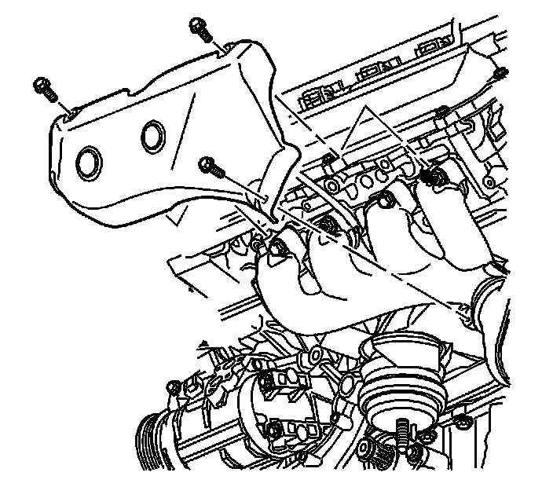
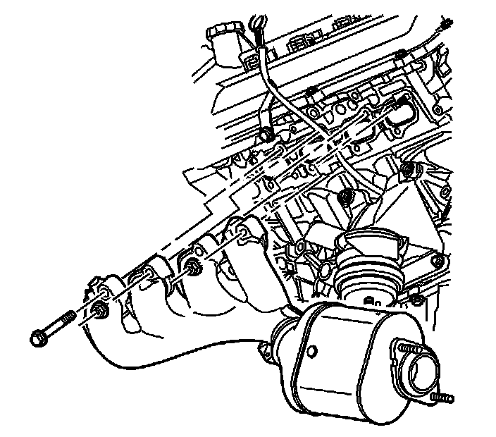
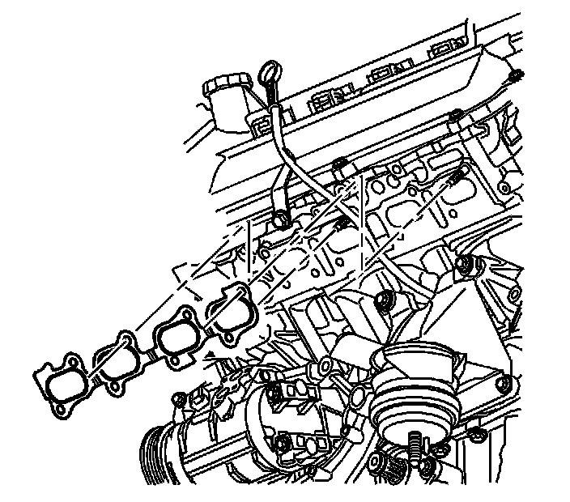
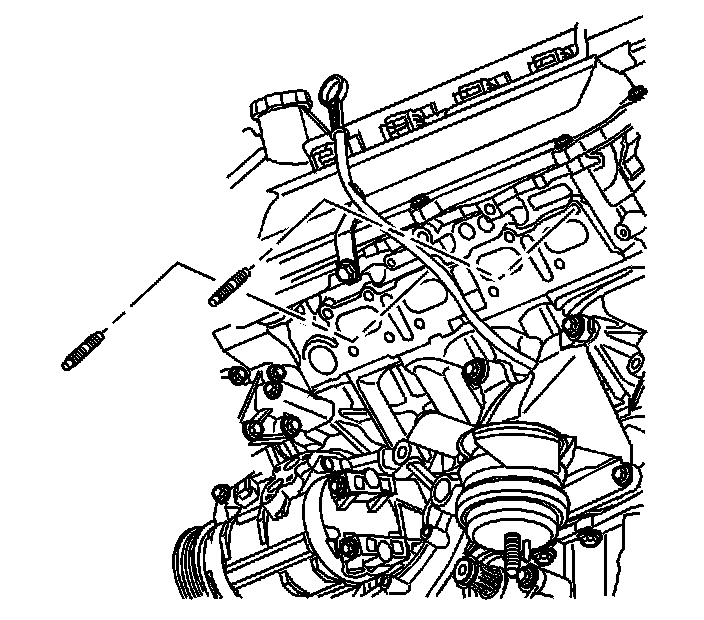
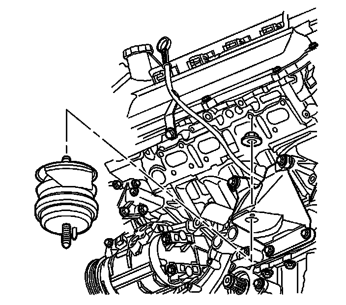
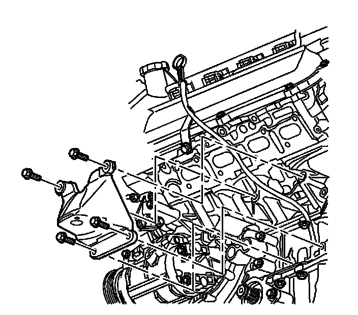
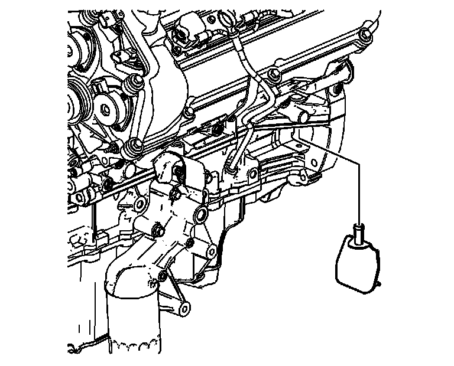

2. Exhaust Manifold Removal - Left Side
Exhaust Manifold Removal - Left Side

1. Remove the left exhaust manifold heat shield bolts.
2. Remove the left exhaust manifold heat shield.

3. Remove the left exhaust manifold bolts and nuts from the left cylinder head.
4. Remove the left exhaust manifold.

5. Remove the left exhaust manifold gasket.

6. Remove the left exhaust manifold studs from the left cylinder head.

7. Remove the left engine mount upper nut.
8. Remove the left engine mount.

9. Remove the left engine mount bracket bolts.
10. Remove the left engine mount bracket.

11. Remove the engine flywheel housing left cover.